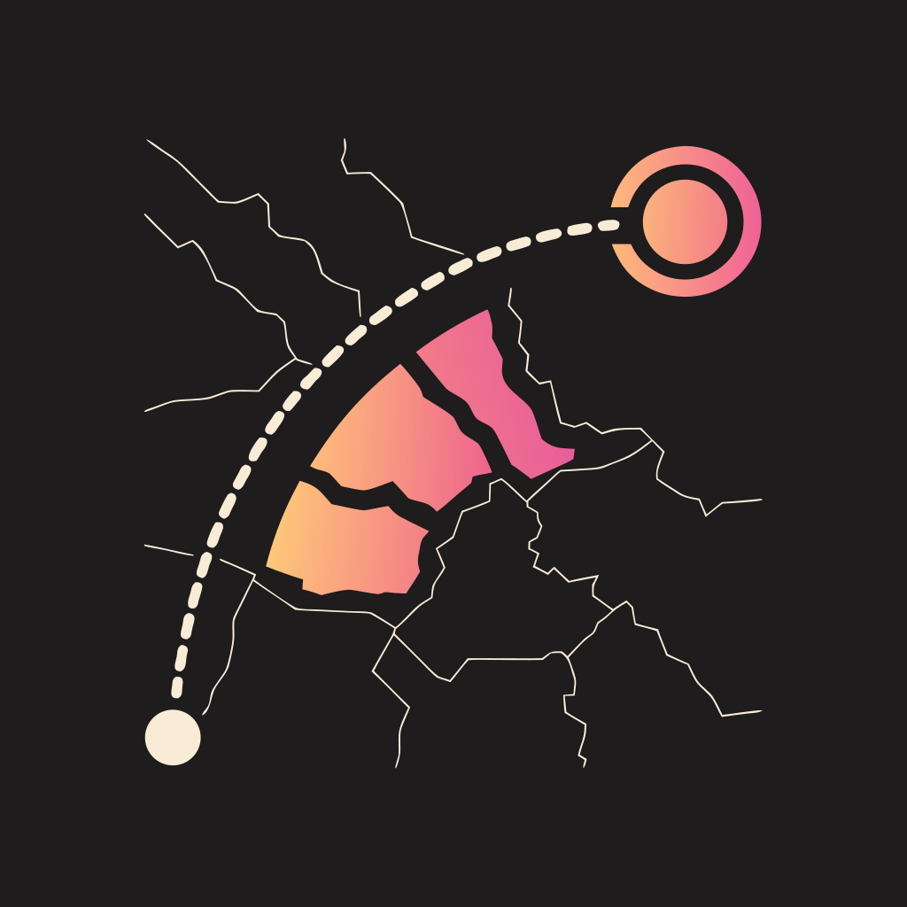

WHEELS DOWNПолитика конфиденциальности
Действует с [дата публикации]. Приложение Wheels Down (далее — «приложение») разрабатывает [ИП Фамилия Имя Отчество, ОГРНИП]. Связаться: [email].
Коротко
У приложения нет аккаунтов и собственного сервера. Всё, что вы отмечаете — страны, регионы, города, перелёты, — хранится только на вашем устройстве. Мы не получаем эти данные и не передаём их третьим лицам.
Какие данные обрабатываются на устройстве
- Отмеченные места и их статусы, журнал перелётов (аэропорты, даты, номера рейсов, места и класс, если они есть в посадочном талоне).
- Настройки приложения.
Эти данные не покидают устройство, пока вы сами не отправите их — например, через резервную копию или карточку «Поделиться».
Камера и фотографии
Камера используется только для сканирования штрихкода посадочного талона, фотографии — только чтобы прочитать штрихкод со скриншота, который вы выбрали. Изображения обрабатываются на устройстве и не сохраняются и не передаются. Из штрихкода приложение берёт данные о рейсе; имя пассажира и номер бронирования не сохраняются.
Карта
При приближении карты приложение загружает подробные слои (дороги, водоёмы, подписи) с сервиса OpenFreeMap. Как и при открытии любой веб-страницы, этот сервис видит IP-адрес вашего устройства и какие фрагменты карты загружаются. Основная карта мира работает без интернета.
Импорт и резервные копии
Файлы истории перелётов (App in the Air, Flighty) и резервные копии обрабатываются на устройстве. Файл резервной копии создаётся только по вашей команде и отправляется туда, куда вы его направите в системном окне «Поделиться».
Покупки
Подписки и покупки оформляются через магазин приложений (RuStore или Google Play). Платёжные данные обрабатывает магазин по своим правилам; мы их не получаем. Приложение узнаёт только, активна ли у вас подписка.
Аналитика и реклама
Приложение не использует рекламу, аналитику и трекинг. Если это изменится — например, появятся отчёты о сбоях, — мы обновим эту политику до выхода такой версии.
Удаление данных
Все данные удаляются вместе с приложением или через очистку данных приложения в настройках телефона.
Дети
Приложение не предназначено специально для детей и не собирает данные о них.
Изменения
Мы можем обновлять эту политику; актуальная версия всегда на этой странице.
Privacy policy
Effective [publication date]. Wheels Down (“the app”) is developed by [owner name]. Contact: [email].
In short
The app has no accounts and no server of its own. Everything you mark — countries, regions, cities, flights — stays on your device. We don't receive this data and don't share it with anyone.
Data processed on your device
- Places you mark and their statuses; your flight log (airports, dates, flight numbers, seat and class when a boarding pass has them).
- App settings.
This data doesn't leave your device unless you send it yourself, for example as a backup or a share card.
Camera and photos
The camera is used only to scan boarding pass barcodes, and photos only to read a barcode from a screenshot you pick. Images are processed on the device and are neither stored nor sent anywhere. The app keeps the flight details from the barcode; the passenger name and booking reference are not stored.
Map
When you zoom in, the app loads detailed layers (roads, water, labels) from OpenFreeMap. Like any website, that service sees your device's IP address and which map tiles are loaded. The world map itself works offline.
Imports and backups
Flight history files (App in the Air, Flighty) and backups are processed on the device. A backup file is created only when you ask for it and goes wherever you send it from the system share sheet.
Purchases
Subscriptions and purchases go through the app store (RuStore or Google Play), which handles payment details under its own policies; we never receive them. The app only learns whether your subscription is active.
Analytics and ads
The app has no ads, analytics or tracking. If that changes — for example, crash reports — we'll update this policy before such a version ships.
Deleting your data
All data is deleted with the app, or by clearing the app's data in your phone's settings.
Children
The app isn't directed at children and doesn't collect data about them.
Changes
We may update this policy; the current version is always on this page.